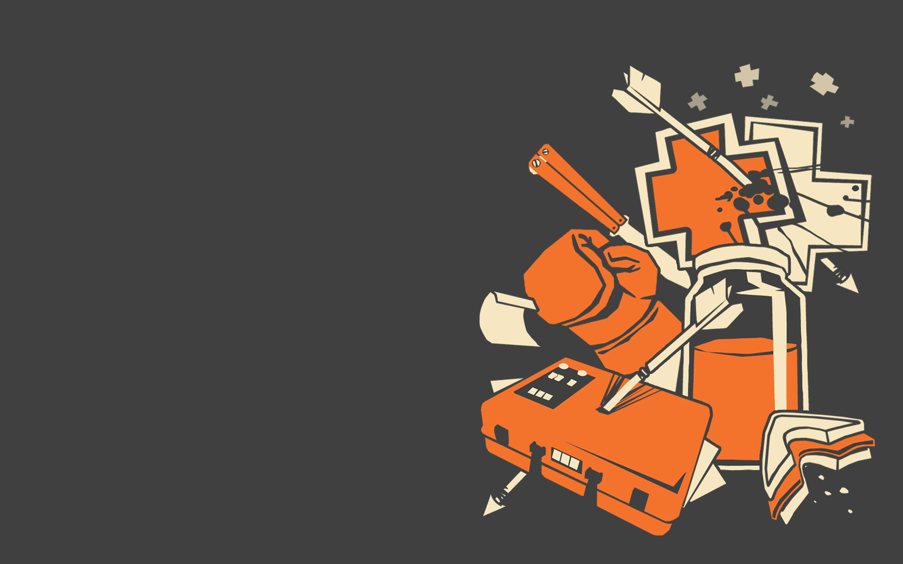
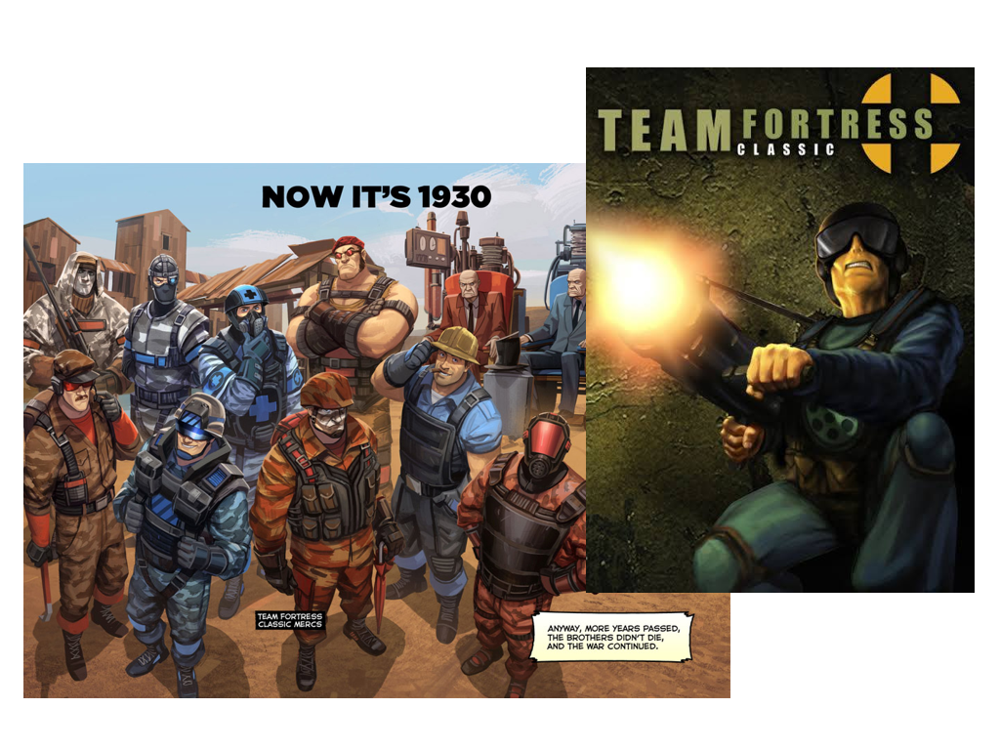
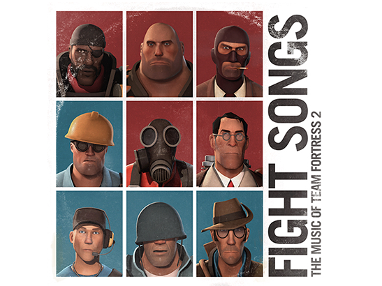

TF2 або ж Team Fortress 2 — командний шутер від першої особи, розроблений компанією Valve та випущений у 2007 році, що входить до Orange Box.
Ця гра повністю безкоштовна для гри АЛЕ! не враховуючи шапок!
Що ж саме, чесно кажучи, за гра, Team Fortress 2?
Багато гравців знають про цю гру саме із-за мемасів від 2010-их і до сьогодні.
Команди поліляються на Червону (RED) та Синю (BLU), де двоє команд змагаються за перемогу.
(Або ж чекайте того, що воти танцюють Конгу чи Навприсядки на спавні!)
У грі переважає всього 9 класів, але всі вони мають свої унікальні можливості та стратегії.
Сама гра складається з режимів та дуже великою кількістю карт, зробленими розробниками або ж і гравцями.
В основному, існують 4 режимів, а разом і сервери спільноти та створення власного.
1. Звичайний режим
Основні ігрові режими
Альтернативні ігрові режими
2. Змагальний режим (преміум режим)
3. Манн проти машин
4. Тренування

А ще в Team Fortress 2 можна пограти в Steam з абсолютним вільним доступом. Сюди ж можна встановлювати моди, модифікації, HUD-и для кращого гемплею для гравця.

Де є перша версія Team Fortress 2?
Найперша версія TF2 була взагалі модом на іншу гру від іншої компанії, але скорішим часом, вийшла, знову ж таки, модифікація під назвою Team Fortress Classic, яка взагалі є модом для першої частини Half-Life. А вже скоро, стала повноцінною грою в 1999 році. А вже в 2006 виходить анонс новійшої версії гри, вже під назвою Team Fortress 2.
Кілька скриншотів з гри для ознайомлення
TF2 - це не просто гра, але й збірка коміксів! Team Fortress налічує багато позасюжетних коміксів та 7 сюжетних. З появою 7-го коміксу, у кінці 2024 року Valve сповістили про завершення сюжетних коміксів, а вже й скоро дали вільний доступ до кодів гри у вгляді SDK, давши гравцям вільну роботу з грою.
Щоб дізнатися більше про комікси, тисніть тут <-
Крім коміксів ... музичні диски, екшн-фігурки, трейдові картки, постери, все що тільки душа забажає можна знайти на ринкових платформах!
Одним із них є збірка саунтруків під назвою "Fight Songs" The Music of Team Fortress 2.
Дякую за краплю уваги :)
